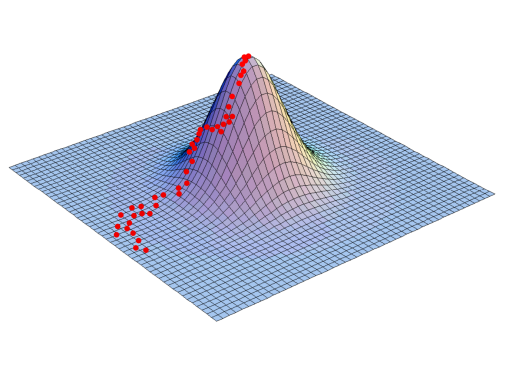
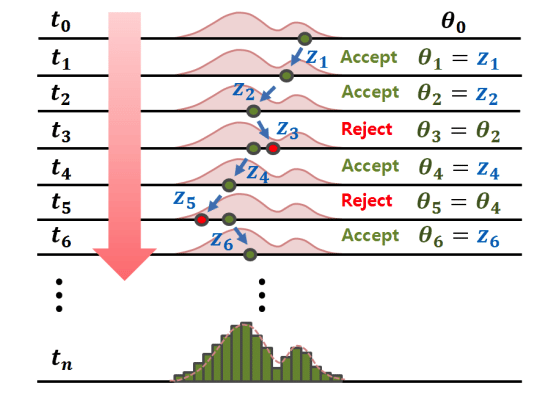
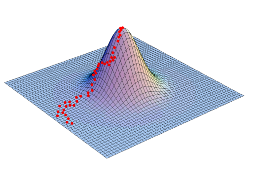
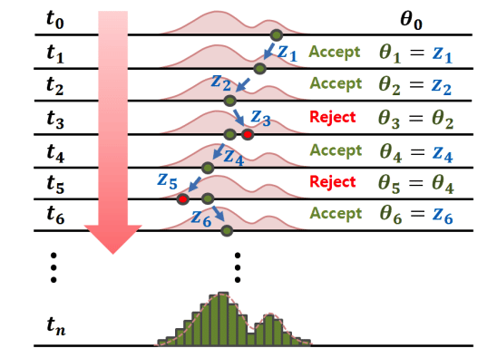

Molecular Epidemiology of Pakistan's Early Omicron Wave
Barney Isaksen Potter
KU Leuven
2024-09-13
Rega Institute, Infection & Immunity Seminar
What can phylogenetics tell us?
- Phylogeny
- Evolutionary rate
- Substitution rates
- Demographic parameters
- Migration rates
- Migration history
What can phylogenetics tell us?
- Phylogeny
- Evolutionary rate
- Substitution rates
- Demographic parameters
- Migration rates
- Migration history
What can phylogenetics tell us?
- Phylogeny
- Evolutionary rate
- Substitution rates
- Demographic parameters
- Migration rates
- Migration history
\[\tiny
Q_{JC69} =
\begin{bmatrix}
\cdot & \lambda & \lambda & \lambda \\
\lambda & \cdot & \lambda & \lambda \\
\lambda & \lambda & \cdot & \lambda \\
\lambda & \lambda & \lambda & \cdot \\
\end{bmatrix} \\[1em]
Q_{GTR} =
\begin{bmatrix}
\cdot & a\pi_C & b\pi_A & c\pi_G \\
a\pi_T & \cdot & d\pi_A & e\pi_G \\
b\pi_T & d\pi_C & \cdot & f\pi_G \\
c\pi_T & e\pi_C & f\pi_A & \cdot \\
\end{bmatrix}
\]
What can phylogenetics tell us?
- Phylogeny
- Evolutionary rate
- Substitution rates
- Demographic parameters
- Migration rates
- Migration history
What can phylogenetics tell us?
- Phylogeny
- Evolutionary rate
- Substitution rates
- Demographic parameters
- Migration rates
- Migration history
What can phylogenetics tell us?
- Phylogeny
- Evolutionary rate
- Substitution rates
- Demographic parameters
- Migration rates
- Migration history
How can we infer phylogenies robustly from genomic sequence data and geographic metadata?
Problem: parameter space size
\[\tiny
\begin{array}{cc}
Num.~taxa & Num.~topologies \\ \hline
1 & 1 \\
2 & 1 \\
3 & 3 \\
4 & 15 \\
5 & 105 \\
6 & 945 \\
7 & 10,395 \\
8 & 135,135 \\
9 & 2,027,025 \\
\vdots & \vdots \\
1,000 & \geq 1.0 \times 10^{3,000} \\
\end{array}
\]

Source: Stamatakis & Kozlov (2020)
Enter: Bayes' Theorem
\[
P(\theta|\textbf{D}) = \frac{P(\textbf{D} |\theta) \times P(\theta )}{P(\textbf{D})}
\]
 



Source: Jin, Ju, & Jung (2019)
BA.1 Phylogeography in Pakistan
- 1690 global Omicron (BA.1) genomes
- 63 from Pakistan
- 15 with travel-histories
- 32 discrete geographic areas
- Pakistan and neighboring countries
- Regions of China
- UN Geogregions
- Roughly one third of Pakistan's fifth wave
Source: Layan et al (2023)
Source: Lemey et al (2020)
ECV-KU Leuven
- Guy Baele
- Mandev Gill
- Philippe Lemey
- Samuel Hong
Vilnius University
NIH Pakistan
- Massab Umair
- Zaira Rehman
- Aamer Ikram
- Muhammad Salman